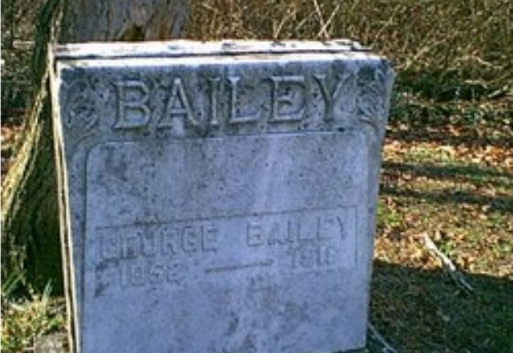

January 1852, Raleigh County, Virginia (now West Virginia) SUPPORTED (the compiled account of his father's descendants lists George W., 1852–1916, among Sparriel Bailey × Mary Jane Tyree's children; Geni and Find a Grave agree on January 1852)
Died
12 October 1916, at his home in Johntown, Raleigh County, of typhoid fever after about ten days' illness, aged 64 SUPPORTED (his obituary, Beckley Raleigh Register, October 1916)
Buried
Unproved UNPROVED (Find a Grave memorial 119998081 places him at Hurt Cemetery, Stanaford; Wildwood Cemetery, Beckley, and Sparriel Bailey Cemetery remain candidates. No record-level burial has been found, so no burial place is stated here as fact)
Married
Letitia "Tisha" Warden — 12 June 1872, Raleigh County, West Virginia SUPPORTED (marriage index; his obituary gives the marriage year as 1871 — see Research Notes)
Residence
Town District community around Beckley, Raleigh County, West Virginia SUPPORTED
Occupation
Clerk of the county court, Raleigh County (one term); farmer at Johntown in his later years SUPPORTED (his obituary)
Religion
No religion recorded in the research folder for him
His parentage rests on the compiled "Some Descendants of Sparriel Bailey" (which lists George W., 1852–1916, among Sparriel × Mary Jane's children) and the Sparriel Bailey Cemetery transcription naming Mary Jane Tyree as his mother — supported, not documented. Geni spells his father's first name "Sparriel," the spelling of the compiled volume's title; this page uses the folder's "Sparrel." Find a Grave gives his mother as Mary "Polly" Meadows Bailey — that maiden name is not adopted here. FamilySearch also carries an extra contributor parents entry naming Sarah Stanley as a mother; she is Sparrel's mother, one generation up, left as found. Their own profile is built at their turn.
Spouse
Letitia "Tisha" Warden (9 November 1855 – 24 September 1925), married 12 June 1872 SUPPORTED
Twelve children, all born in Raleigh County. After George's death, Letitia married his first cousin Pyrrhus Paris Bailey.
Children
Charles Henry Bailey (1873–1927) (married Annice Irene Hurt) SUPPORTED Mary J. "Mollie" Bailey (1875–1940) (married Robert Lee Trump, then Hugh A. Dunn) SUPPORTED Bertha Snow Bailey (1877–1942) (married George Henry Mellon) SUPPORTED Edna Bailey (31 August 1880 – 19 October 1926; married James Emmette Hurt) DOCUMENTED — the direct line Bernard Bailey (1882–1929) (married Bertha Blanche Warden) SUPPORTED Lillie Bailey (1884–1961) (married Lewis R. Hager) SUPPORTED Edgar P. Bailey (1887–1932) SUPPORTED Wilmer W. Bailey (1889–1932) (married Hattie Mann) SUPPORTED Claude Bailey (1891–1960) SUPPORTED Ash Bailey (1893–1932) SUPPORTED Grace Bailey (1897–1952) SUPPORTED Jean Bailey (1899–1977) SUPPORTED
The roster is verified and complete at twelve; no twins. All twelve were born in Raleigh County. Geni links nine of them; Claude, Grace, and Jean have no linked profiles on Geni, though George's Geni About text names Claude Bailey, Grace M Bailey Lares, and Lou Jean Bailey Lamb among the twelve — Lou Jean is the folder's Jean. Geni's "Lilly Bailey" is the folder's Lillie (George's About text calls her "Lillie May Bailey"), and Geni's "Ashley Bailey" is the folder's Ash (by elimination against the About list and by name form). Edna's birth is verified by the Raleigh County birth register (p. 86).
Siblings
John Washington Bailey (1835 – death unknown) SUPPORTED James Monroe "Jim" Bailey (1836–1925) SUPPORTED William Henderson Bailey (1837–1909) SUPPORTED Margaret J. "Maggie" Bailey (1844–1912) SUPPORTED Amos Bailey (1845–1917) SUPPORTED Sarah Amanda Bailey Mullins (1848–1904) SUPPORTED
All six are named as his siblings on his Find a Grave memorial; none is linked on this page. George, born 1852, was the youngest.
January 1852 · age 0 Born, Raleigh County, Virginia (now West Virginia) SUPPORTED
12 June 1872 · age 20 Married Letitia "Tisha" Warden, Raleigh County, West Virginia SUPPORTED (marriage index; his obituary gives the marriage year as 1871 — see Research Notes)
1873–1900 Twelve children born, all in Raleigh County, including Edna (31 August 1880) — the direct line SUPPORTED
12 October 1916 · age 64 Died at his home in Johntown, of typhoid fever after about ten days' illness SUPPORTED (his obituary)
Life Story
George Washington Bailey was born in January 1852 in Raleigh County, Virginia — now West Virginia — the son of Sparrel Bailey and Mary Jane Tyree. He lived his life in the Town District community around Beckley, the same neighborhood as the Hurt household of Nannie Hurt, whose children married into this family twice: his son Charles Henry married Nannie's daughter Annice Irene, and his daughter Edna married Nannie's son James Emmette.
On 12 June 1872, in Raleigh County, he married Letitia "Tisha" Warden, daughter of Hughes Jefferson Warden and Susan Ann Williams. Together they had twelve children, all born in Raleigh County: Charles Henry, Mary J. "Mollie," Bertha Snow, Edna — the direct line — Bernard, Lillie, Edgar P., Wilmer W., Claude, Ash, Grace, and Jean. George died 12 October 1916, aged 64, at his home in Johntown of typhoid fever after about ten days' illness. He had served one term as clerk of the county court of Raleigh County, and in his later years farmed at Johntown. His burial is unproved: Find a Grave places him at Hurt Cemetery, Stanaford, while Wildwood Cemetery, Beckley, and Sparriel Bailey Cemetery remain candidates, and no record-level burial has been found.
His portrait, shown here, comes from his Find a Grave memorial, as does his gravestone photograph in the gallery below. His obituary clipping is filed in the research folder and cited below; all three were first placed as crops from phone screenshots of the memorial, as Find a Grave blocked the browser's pull, and the originals were pulled in full from the memorial on 5 November 2026 and now serve the page. The memorial's additional grave photograph (the same stone, more overgrown, 2013) is now in the research folder, filed only.
Photo Gallery

His gravestone, "BAILEY — GEORGE BAILEY 1852–1916"
Sources and Evidence
Thomas A. Warden's compiled "Some Descendants of Sparriel Bailey": lists George W., 1852–1916, among Sparriel × Mary Jane's children SUPPORTED
Sparriel Bailey Cemetery transcription: names Mary Jane Tyree as Sparriel's wife and George's mother SUPPORTED
Marriage index, Raleigh County, West Virginia, 12 June 1872: George Washington Bailey married Letitia Warden SUPPORTED
Raleigh County birth register (p. 86): Edna Bailey, born 31 August 1880, daughter of George Washington Bailey and Letitia Warden — verifies Edna as their daughter DOCUMENTED
Geni profiles, click-verified 4 November 2026: George Washington Bailey (born January 1852, Raleigh; died 12 October 1916, Raleigh, typhoid; burial Beckley — burial is tree-level and is not stated on this page as fact (place and cause are now stated from his obituary, below)); son of Sparriel Bailey and Mary Jane Bailey (Tyree); husband of Letitia "Tisha" Bailey (Warden); father of nine linked children (Mary J. Dunn, Edgar Philip, Edna Hurt, Charles Henry, Bertha Snow Mellen, Bernard, Lilly, Wilmer, Ashley), with Claude, Grace M Bailey Lares, and Lou Jean Bailey Lamb named in his About text without linked profiles SUPPORTED
Find a Grave memorial 119998081, George W Bailey: born January 1852, Raleigh County; died 12 October 1916 (aged 64), Raleigh County; burial Hurt Cemetery, Stanaford; son of Sparriel Bailey and Mary "Polly" Meadows Bailey; married Letitia Warden 12 June 1872; twelve children to adulthood; portrait photograph by Cynthia Benon, shown here. The "Meadows" maiden name for his mother is not adopted (see Research Notes); the Hurt Cemetery burial is flagged, not stated as fact SUPPORTED
Obituary, "George Bailey, Former County Clerk, Is Dead," Beckley Raleigh Register, October 1916 (Find a Grave memorial 119998081, photograph of the clipping, read from the original image pulled in full from the memorial on 5 November 2026): typhoid fever, died at his home in Johntown on Thursday evening, 12 October 1916, aged 64, after about ten days' illness; clerk of the county court one term; farmer at Johntown; married in 1871 to Letitia Warden; twelve surviving children named SUPPORTED
Ancestry tree "Tricia's Shamblen/McKinney Family Tree" (tree 44342901), George Washington Bailey (person 6189644180): born 12 October 1849, died 27 May 1920, parents William Bailey × Sarah Ann Bailey — a different George, or a conflation; nothing from it is adopted. Its twelve-child roster matches the folder's twelve names SUPPORTED
Research Notes and Open Questions
Grades on this page: DOCUMENTED means an original record was read (Edna's birth register entry); SUPPORTED means a claim attested by filed research — the compiled account, the marriage index, Geni and Find a Grave checks — but not by a register read here; UNPROVED means a claim with no corroboration found.
Death: 12 October 1916, at his home in Johntown, Raleigh County, of typhoid fever after about ten days' illness, aged 64 — his obituary in the Beckley Raleigh Register, October 1916, read from a photograph of the clipping on his Find a Grave memorial. It confirms the typhoid cause Geni gave at tree level. His memorial's link to the West Virginia Archives death register (line 36) remains the record-level lead.
Marriage year: the marriage index gives 12 June 1872; his obituary says he was married in the year 1871. The year is not settled here.
Burial: unproved. Find a Grave memorial 119998081 places him at Hurt Cemetery, Stanaford; Wildwood Cemetery, Beckley, and Sparriel Bailey Cemetery remain candidates. Contributor entries found standing — Beckley on Geni, Stanaford on FamilySearch, a Hurt Cemetery mention in his WikiTree biography — were left as found, unverified. No burial place is stated here as fact.
Mother's name: the folder carries Mary Jane Tyree (Sparriel Bailey Cemetery transcription). Find a Grave gives Mary "Polly" Meadows Bailey. The other George Washington Bailey in Raleigh County (1868–1896, Biggs Family Cemetery, Prosperity) also has a mother called Mary "Polly" (Cook) — the nickname collides across the two families, and the "Meadows" maiden name is not adopted here.
Father's name: Geni and the compiled volume spell "Sparriel"; the folder's working spelling is "Sparrel," used on this page. FamilySearch carries an extra contributor parents entry naming Sarah Stanley as a mother; she is Sparrel's mother, one generation up, left as found.
Other George: the FamilySearch George Washington Bailey (1868–1896) in another household, and the Find a Grave memorial 100883544 (15 February 1868 – 27 November 1896, Biggs Family Cemetery, Prosperity, parents George Washington Bailey and Mary "Polly" Cook Bailey), are a different man who must not be merged with ours.
Children: the roster is verified and complete at twelve, no twins, all born in Raleigh County. Geni links nine; Claude, Grace, and Jean have no linked profiles, though George's Geni About text names Claude Bailey, Grace M Bailey Lares, and Lou Jean Bailey Lamb — Lou Jean is the folder's Jean. Geni's "Lilly Bailey" is the folder's Lillie ("Lillie May Bailey" in the About text); Geni's "Ashley Bailey" is the folder's Ash (by elimination against the About list and by name form). Find a Grave's child list confirms both mappings ("Ashley 'Ash'" and "Lou Jean"). The Ancestry tree's twelve-child roster, with years 1873–1971, matches the folder's twelve names; the years are tree-level and are not used here. His obituary names all twelve surviving children — Mrs. H. A. Dunn, Mrs. G. H. Mellon, Mrs. Hurt of Warden, Misses Lilly, Jean and Grace, Dr. Edgar, Bernard, Charles, Wilmer, Ash and Claud — confirming the roster including Claude, Grace, and Jean, and calling Edgar "Dr." Find a Grave's child lists on both memorials agree on the twelve years (1873–1977); those years are carried on the Children card above at memorial grade.
Siblings: his Find a Grave memorial names six siblings — John Washington Bailey (1835 – death unknown), James Monroe "Jim" Bailey (1836–1925), William Henderson Bailey (1837–1909), Margaret J. "Maggie" Bailey (1844–1912), Amos Bailey (1845–1917), and Sarah Amanda Bailey Mullins (1848–1904). None is linked on this page.
Photographs: his portrait, shown here, comes from his Find a Grave memorial (photograph by Cynthia Benon, captioned "George Bailey"), as does his gravestone photograph in the gallery below (photograph by Nancy Horton Gillispie, photographed 28 November 2000 by Robert Lee Gravely). The portrait, the gravestone photograph, and his obituary clipping were first placed as crops from phone screenshots of the memorial, as Find a Grave blocked the browser's pull site-wide with no interactive challenge; the originals were pulled in full from the memorial on 5 November 2026 and now serve the page. The memorial's additional grave photograph (historianne, 2013) shows the same stone, more overgrown, and is filed in the couple folder only. The two contextual photographs in the research folder (coal miners at Gary, 1908; Raleigh County courthouse, 2007) are not shown.
Open items: his death place and cause at record level (West Virginia Archives death register, line 36, is the lead); his burial at record level; the Franklin County, Virginia marriage bond for Sparrel Bailey × Mary Jane Tyree (about 1832), which would document his parents' marriage.
Genes Reunited is deferred to a later pass, so no Genes Reunited tile is shown here.
The family couple profile's research-folder link pointed to a trashed folder; this page links the live research folder.
Profile history: Created 4 November 2026 from the family couple profile and research notes.